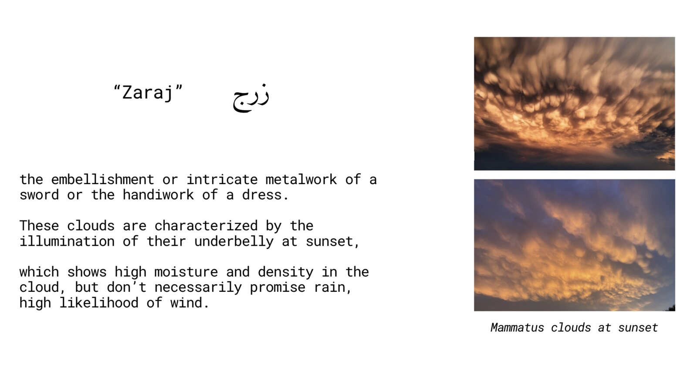
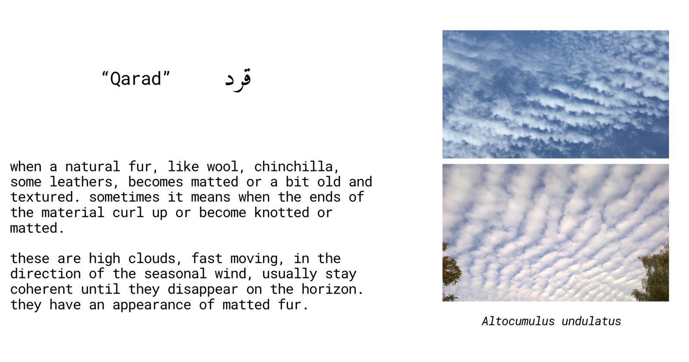

3
Bodies of the Clouds
Bodies of the Clouds
Another upcoming exploration, Bodies of the clouds, is a study of how the names of the clouds held meteorological significance, embedded within the beauty of their descriptions.


This page is still being updated...